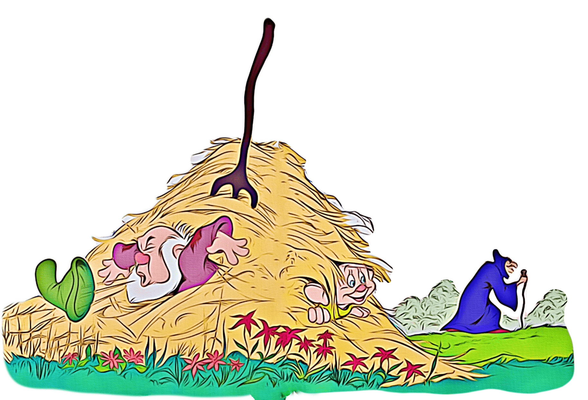

When the smoke drifted away, they were sitting on the ground in the middle of the forest!
The squirrels and the rabbits came to greet them.
The deer lay down beside them. And the birds sang above their heads.
Soon there were so many animals around them that they could see only the tops of the trees.
After a while, Dopey got up and started off.
"Wait for me!" Leona called.
Dopey turned his head to see if Leona was coming.
And he bumped it on a bee hive!
"BZZZZZZZZZZ BZZZZZZZZZZ BZZZZZZZZZZ "
"Run, Dopey, run!" Leona yelled. Dopey blinked. And then he saw the bees!
Quickly he pulled his hat down over his face. But his ears popped out!
The bees flew into the shape of an arrow. They aimed at Dopey.
 Dopey took one look....and ran!
He ran past the bushes and trees to the clearing and dived head-first into a haystack!
The bees couldn't find him, so they flew away.
Dopey took one look....and ran!
He ran past the bushes and trees to the clearing and dived head-first into a haystack!
The bees couldn't find him, so they flew away.
"Where are you, Dopey?" Leona called.
Dopey wiggled his foot. Leona pulled and pulled at Dopey's foot. Finally, he was out of the hay.
 Just then, he heard a sneeze.
"ACHOO!" It came from behind the haystack.
"God bless you," Leona said politely.
"ACHOO!" It was Sneezy. "Who are you?" he said. Leona told him and of how she came to the forest.
Just then, he heard a sneeze.
"ACHOO!" It came from behind the haystack.
"God bless you," Leona said politely.
"ACHOO!" It was Sneezy. "Who are you?" he said. Leona told him and of how she came to the forest.
"Nice to know you," Sneezy said between sneezes.
"Now that you're here, would you help me? Snow White sent me to get new hay for our beds, and all it does is make me sneeze!" And every time he sneezed, hay flew all over.
Suddenly, the birds gave a warning cry! Someone was coming!
Dopey peeked around the haystack. It was the Witch!
Dopey, Sneezy and Leona hid.
"I've got to sneeze!" whispered Sneezy. Quickly, Leona grabbed Dopey's hat and threw it over Sneezy's nose.
Sneezy didn't sneeze.
After a while, Dopey peeked around the haystack to see if the witch had gone.
It was safe to come out.
"Thank--ACHOO!--you, Leona," Sneezy said. And he gave Dopey back his hat.
Then they started off toward the dwarf's house.
On the way, they met the other dwarfs who had been fishing at the stream.
Sneezy sneezed all the way home.
